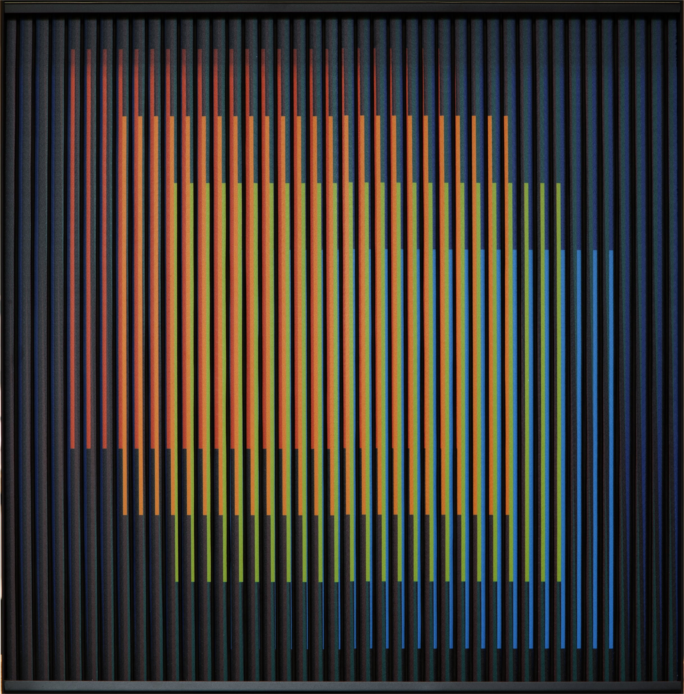

Good evening. Shall we look at something beautiful?

Chromointerférence mécanique
Chromointerférence mécanique belongs to the series in which Cruz-Diez most fully realised his thesis that colour is an autonomous event, unfolding in time as the viewer moves. Parallel coloured strips, printed on aluminium, activate against one another as you pass — the work never looks the same twice.
The present piece is a refined example from the foundational decade of the series, with the cool ultramarine and chromium-green register that is particularly sought after at auction.
Carlos Cruz-Diez (1923–2019) is among the principal figures of twentieth-century art, a founder of the Kinetic and Op movements whose life-long investigation redefined our understanding of colour as a phenomenon rather than a property.
Working between Caracas and Paris, Cruz-Diez developed eight distinct lines of chromatic research — Couleur Additive, Physichromie, Induction Chromatique, Chromointerférence, Transchromie, Chromosaturation, Chromoscope, and Couleur à l'Espace — each responding to a different behaviour of colour in perception.
- MoMAMuseum of Modern Art, New York
- TateTate Modern, London
- PompidouCentre Pompidou, Paris
- MAMMusée d'Art Moderne de la Ville de Paris
- MOCAMuseum of Contemporary Art, Los Angeles
- MFAHMuseum of Fine Arts, Houston
- HirshhornHirshhorn Museum, Washington, D.C.
| Work | Auction | Hammer |
|---|---|---|
|
Chromointerférence Manipulable
1968 · Chromography on aluminum · 80 × 80 cm
|
Sotheby's New York · Nov 2022
Lot 38 · Latin American Art
|
$495,000
↑ 65% over high est.
|
|
Physichromie 500
1970 · Chromography on PVC · 100 × 100 cm
|
Christie's London · Jun 2024
Lot 14 · Post-War & Contemporary
|
$312,500
↑ 12% over high est.
|
|
Couleur Additive Panam 10
1996 · Screenprint on aluminum · 60 × 60 cm
|
Phillips New York · Mar 2024
Lot 61 · Latin America
|
$189,000
Within estimate
|
|
Induction Chromatique 220
1979 · Chromography on aluminum · 80 × 80 cm
|
Sotheby's Paris · Oct 2023
Lot 22 · Art Contemporain
|
$164,800
↑ 8% over high est.
|
|
Chromointerférence Spatiale
1964 · Work on paper · 48 × 48 cm
|
Christie's Paris · Dec 2023
Lot 9 · Œuvres sur papier
|
$96,200
↓ under low est.
|
Prices include buyer's premium where disclosed. Data aggregated from Artnet Price Database, accessed 16 April 2026. Gallery pricing for the present work is available on request and may differ from secondary-market results. This prototype uses illustrative data.